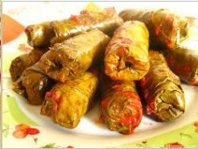
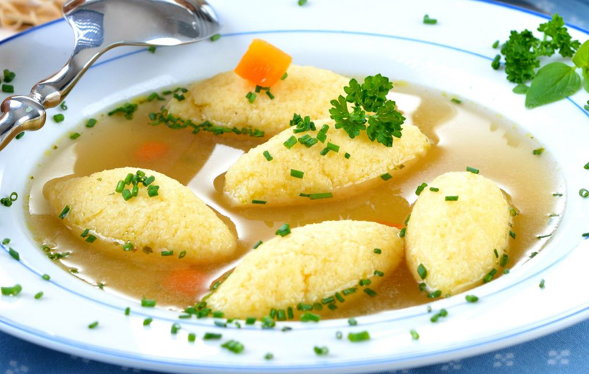
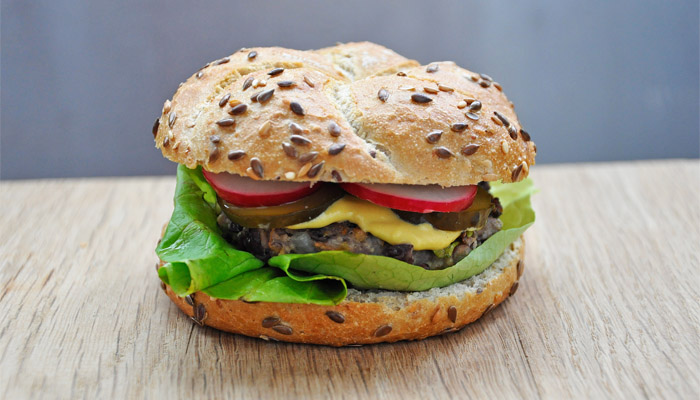

Acasa
GoOut
Preferinte Alimentare
Restrictii Alimentare

Vegani
Spaghete puttanesca
Cartofi cu ierburi la cuptor
Hummus cu sfecla rosie coapta

Post
Supa cu galuste
Pasta de hummus
Pate de ciuperci si caju

Vegetarianism
Salata de cuscus
Burger vegetal cu fasole Adzuki
Falafel la lipie